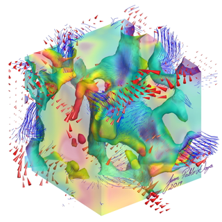
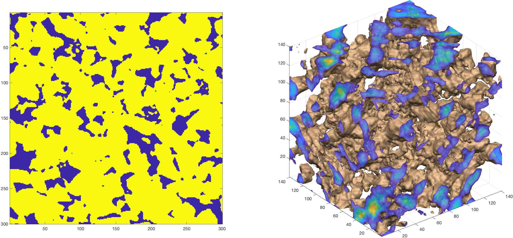
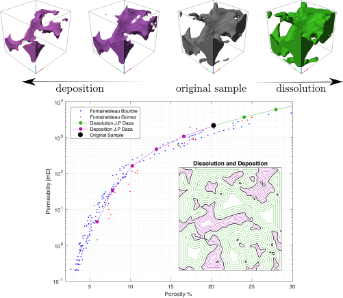
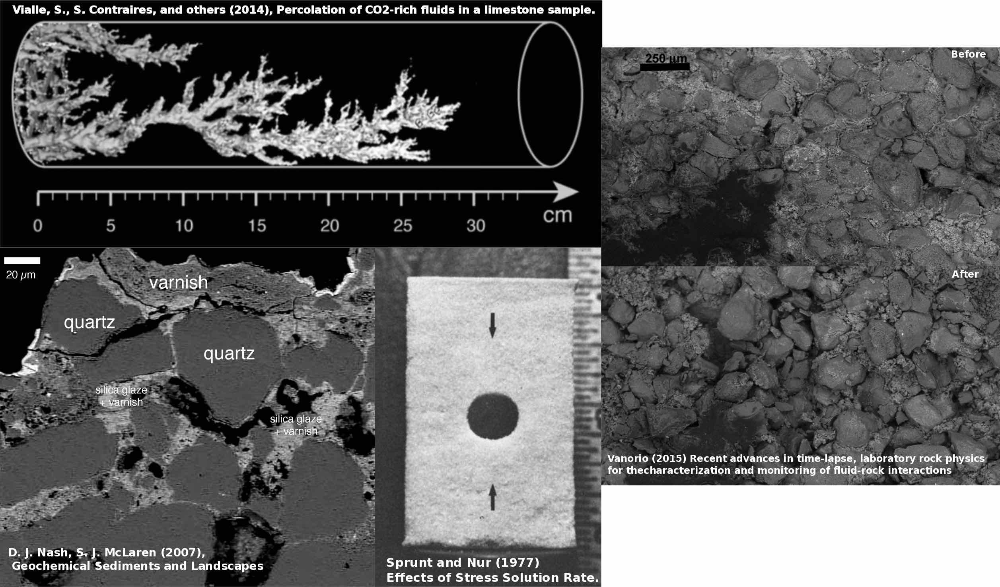
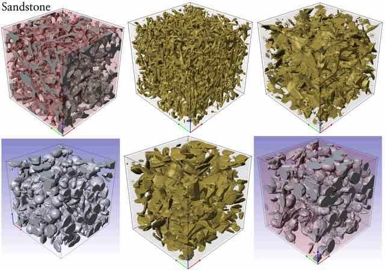
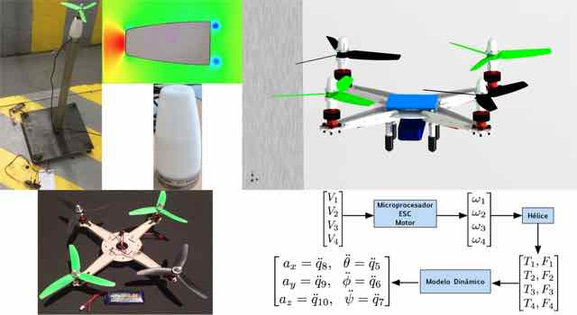
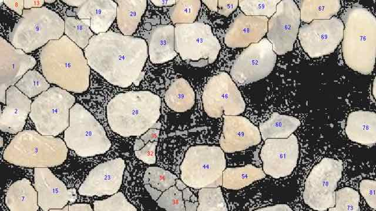

<!-- my-page.html --> 
<script src="https://rawcdn.githack.com/oscarmorrison/md-page/master/md-page.js"></script><noscript>

# Juan Pablo Daza, Stanford University
 
 
## Research
  
### ▣ 2D to 3D Transform
#### Material properties from 2D images.

  
### ▣ Rock Evolution
#### Modeling evolution of CT-scan data to obtain history of rock properties.
  
 
### ▣ Rock Dissolution  
#### Quantifying geometrical changes in rock structure
  
Experiments in rock dissolution have yield useful empirical results, providing changes in rock properties such as permeability. However, rock dissolution has not been rigorously quantified theoretically, preventing reliable computational models to be developed. Additionally, getting samples from all formations of interest, and performing dissolution experiments is an expensive and time consuming task. 
I am quantyfing the geometrical changes in rock geometry, by explaining how the different physical phenomena present during rock dissolution, change the shape and components of the rock matrix.

### ▣ Creating artificial rock samples
#### Montecarlo Simulation
  
Simple theoretical models have been written to explain the bulk behavior of real rocks. However, this models are limited by their assumptions, and real rocks that span all the variety that this models explain, are hard to find, extract and study. 
I wrote an algorithm that generates complex and realistic artificial rocks, that enable the models and its assumptions to be tested. Additionally, this artificial samples will help me evaluate my ideas to propose more realistic and general models to explain the properties of rocks, as well as the study of numerical methods to change the rock geometry, and investigate how this geometry changes under different physical processes such as rock dissolution, deposition and compaction.
  
### ▣ Dynamical Model and Control of a Quadrotor
#### Theoretical model calibrated with experimental results
  
In this project, I wrote a complete dynamical model of a quadcopter using 3D dynamics and considering all components including the small propellers. By using a real quadcopter, I calibrated the model, by measuring and weighting each part of the real quadcopter and building a digital version of it, obtaining the inertial properties such as center of mass and the inertia tensors required for the theoretical model.
Additionally, I measured the propeller force with a triaxial load cell to get the Force-Velocity curve of the propeller. With this model, I calibrated a flight controller to be able to fly the real quadcopter.

### ▣ Identification of sand grains in a micrograph
#### Measurement of grains' geometric properties.
  
In this project, I wrote a program to identify sand grains in a micrograph using different image processing algorithms. The result was an interface where any picture can be loaded and grains will be identified, numbered and its geometrical properties measured. Parameters can be manually changed to improve grain identification, and poorly identified grains (in red) can be ignored from the final calculation.
  
